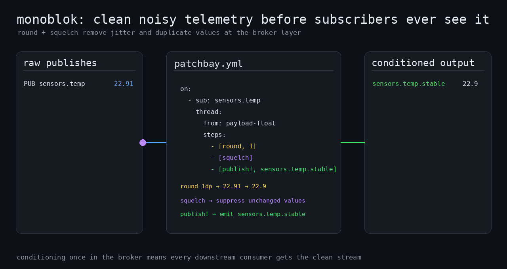

Repeated processing in every subscriber
When sensor readings fluctuate or a price feed repeats values, subscribers often apply the same rounding and filtering. Maintaining that logic in several clients adds work and can lead to inconsistent results.
A separate service can subscribe to raw subjects and republish processed values, but it also needs deployment, monitoring and maintenance.
Define the processing in patchbay
Patchbay rules apply rounding, deduplication, moving averages and threshold checks before messages reach subscribers.
The same rule in EDN or YAML: round to one decimal place, drop repeated values and publish to .stable.
(on "sensors.*"
(-> payload-float
(round 1)
(squelch)
(publish! (subject-append "stable"))))on:
- sub: "sensors.*"
pipeline:
- $payload-float
- [round, 1]
- [squelch]
- [publish!, [subject-append, "stable"]]Subscribers that want the conditioned value listen to sensors.*.stable. The raw stream stays available for anyone who needs it.

What the broker handles
Processing rules. Built-in operators cover deadbands, JSON field extraction and OHLC bars as well as the filters above. Subscribers can use the resulting subjects without implementing these operations themselves.
Catch-up code for late joiners. Opt subjects into the last-value cache, and a new subscriber to $LVC.sensors.> receives the latest value of each subject straight away, followed by live updates.
State lost on restart. Optional snapshots restore the cache and the state inside averages and gates.
Connect existing NATS clients
monoblok speaks the NATS protocol, so existing clients connect without changes. Put it in front of your cluster, run it alongside, or use it on its own as a small broker. See the three ways to run it.
Runtime and packaging
monoblok is written in C with libuv. Its core processing runs on one event loop, with state in memory, and it ships as a binary or Docker image. Saved benchmark runs reach the low millions of messages a second for simple publish and fan-out on a 2-core ARM VPS.
When it is not the right tool
monoblok is a core NATS server with rules, not a replacement for a cluster. It has no JetStream storage, no clustering and no message headers on its own listener. It can consume JetStream messages and forward selected subjects to a NATS cluster.
If plain publish and subscribe is all you need, nats-server is the better choice.
Read more
The introductory blog post explains the background. Further articles are listed on the blog. The documentation is the full guide.